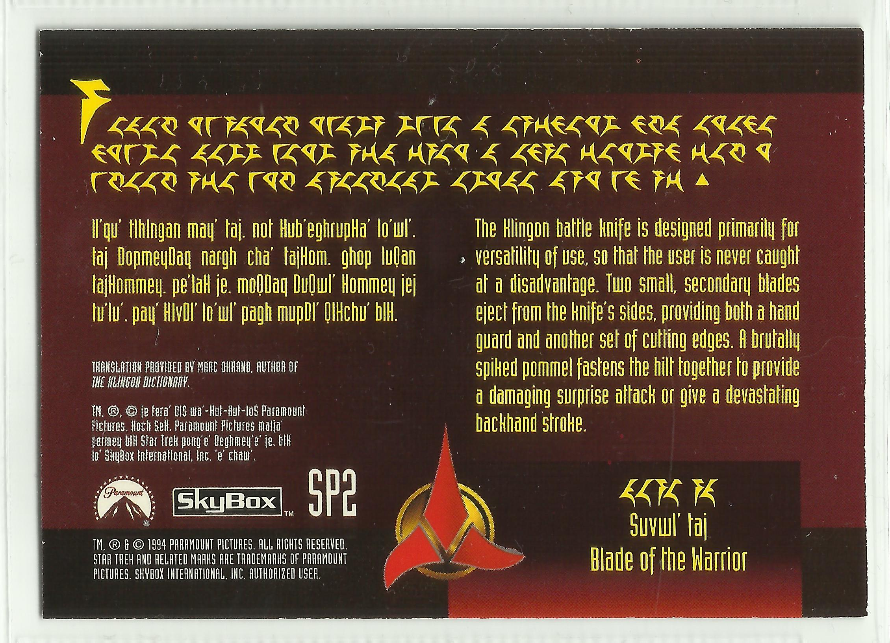
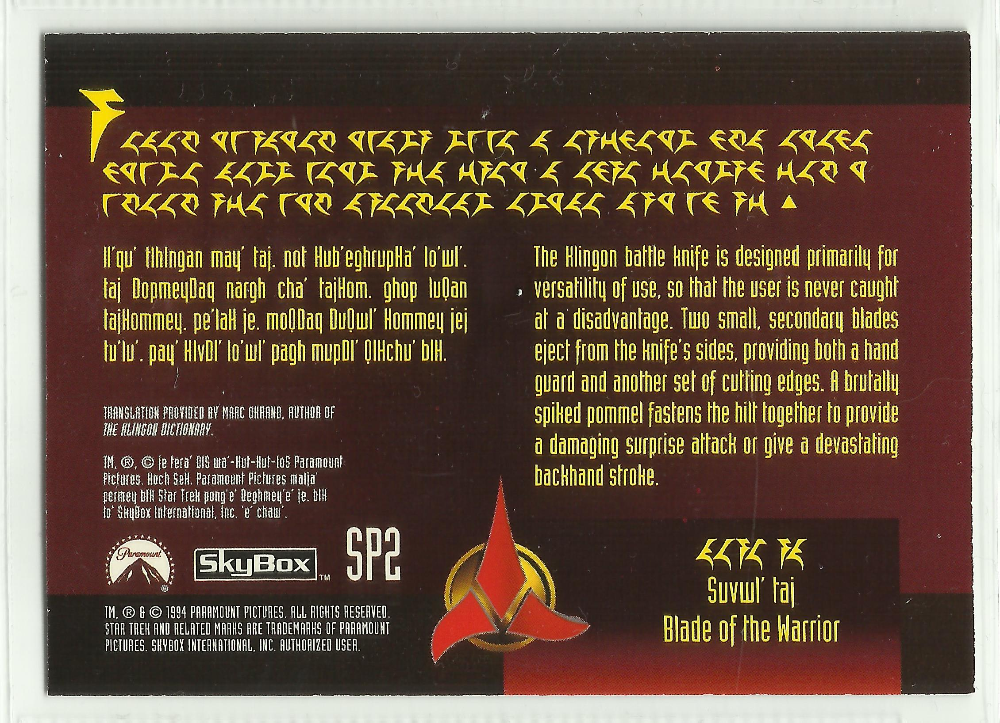
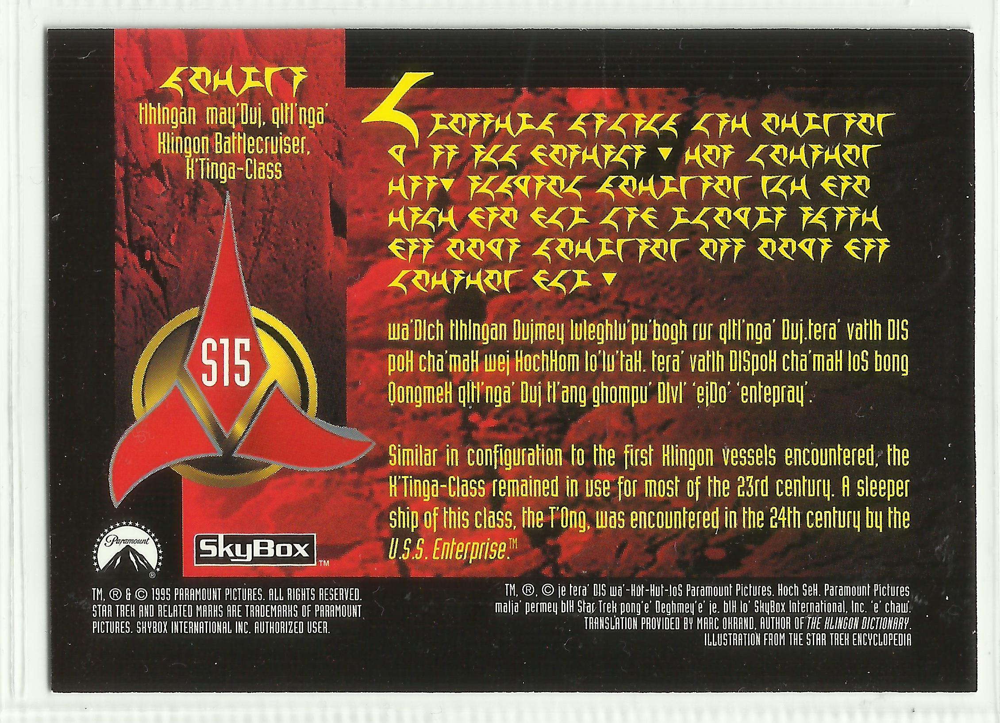
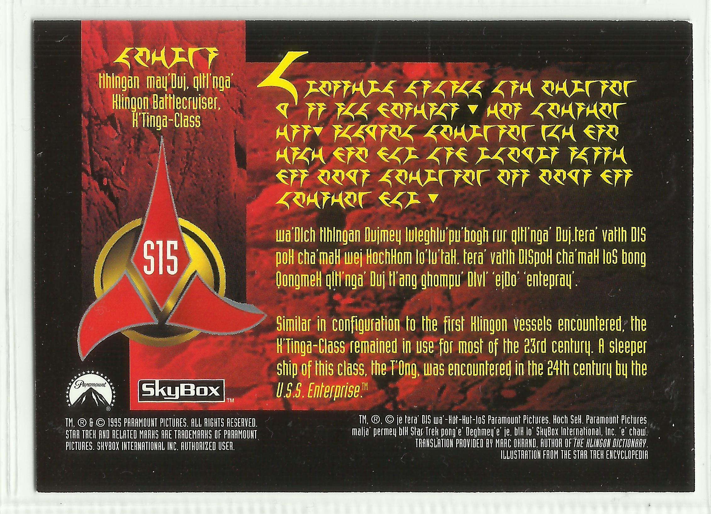
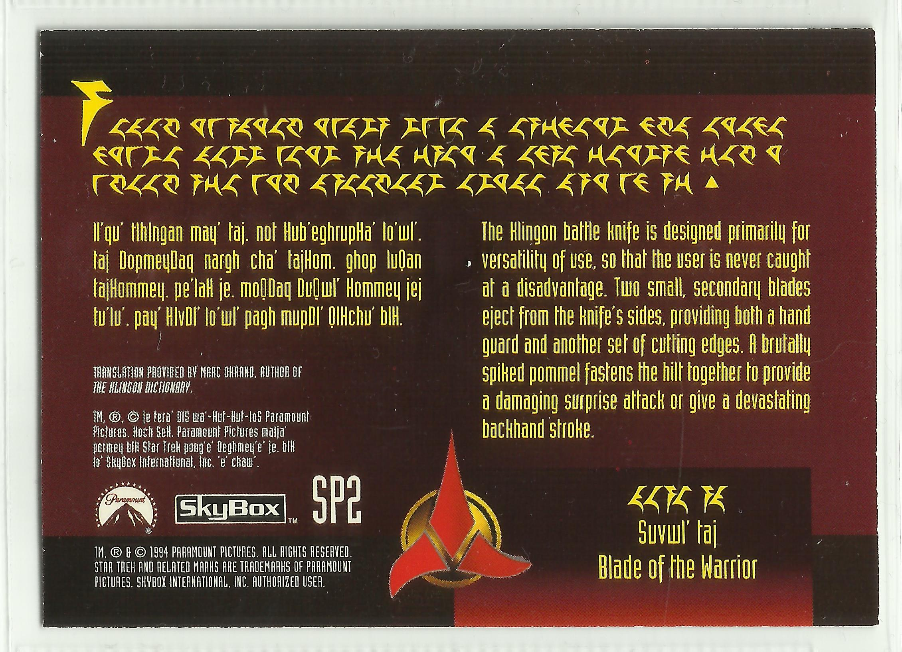
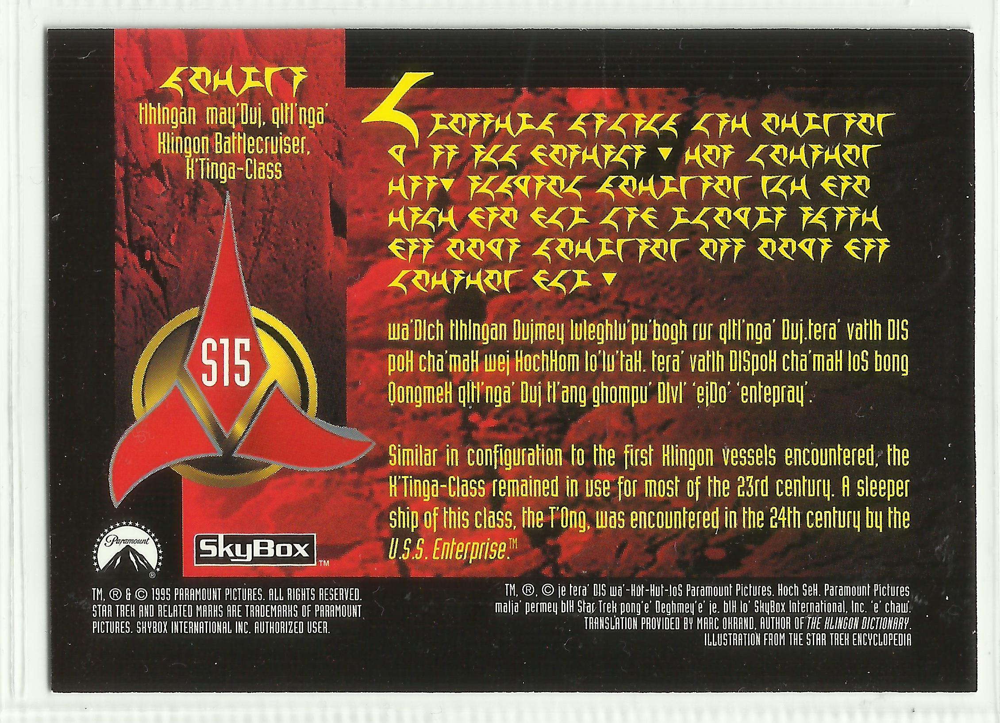

{kind=link}
{kind=link}
{kind=link}
 

{kind=link}


 

This is a gathering of notes in preparation for a future project to design a new pIqaD font for writing Klingon. The purpose of the font is to preserve (regain?) the look and feel of signage in the various Star Trek series, yet also imbue them with meaning by allowing that they be written in proper Klingon.
/zrajm,
This page is a place where I’m gathering ideas and guiding principles for Teh Ultimate Klingon pIqaD typeface. This will be the dense, spiky writing you remember from The Next Generation and Deep Space Nine, but imbued with actual Klingon meaning, with crisp details and sharp points (rather than the slightly amorphous shapes of the veS QonoS interpretation).
In short, this typeface will change future history as we know
it!—Retroactively.
ja
b
lch
mD
e
igh
H
I
j
el
m
fn
lng
o
p
q
Q
gr
S
t
tlh
u
hv
nw
my
’
0
1
2
3
4
5
6
7
8
9
,;:
.!?
c¶
Slashed background indicate undecided glyphs.
(The Star Trek Pi glyph k
is not used here.)
a
b
ch
D
e
gh
H
I
j
l
m
n
ng
o
p
q
Q
r
S
t
tlh
u
v
w
y
’
0
1
2
3
4
5
6
7
8
9
,;:
.!?
The symbols in the Klingonska Akademien’s pIqaD.
Klingon signage, as seen in the various incarnations of Star Trek, used to be devoid of linguistic content. From the very beginning, however, there existed distinct Klingon visual style, and written text seen in The Next Generation and Deep Space Nine may have been nonsense, but it was easily recognizable as clearly Klingon, and consisted of a small distinct set of characters arranged to form “words”. None of these characters had sound or meaning assigned to them.
TOS “Elaan of Troyius” (1968): This very first glimpse of written Klingon actually predates the spoken language by quite a number of years, and comes in the shape of hull markings on a Klingon warship. Unfortunately the characters are not legible on screen, but behind-the-scene photos of the model used for filming the episodes, as well as design notes by Matt Jefferies show us what they look like (Star Trek Sketchbook: The Original Series, 1997; The Evolution of the Klingon Emblem, 2023; Smithsonian: Model, D7 Klingon Battle Cruiser, “Star Trek”; Forgotten Trek: Designing the Klingon Battle Cruiser, 2005):
The characters can be read as “D74” using Klin Mura character set (below). Whether or this reading is the original intent—the ship is a “D7-class battle cruiser”—or a retcon is harder to tell, as the D7 designation was not used in the original series (nor given the Matt Jefferies’ original notes as published in Star Trek Sketchbook).
Looking at the characters one by one, and comparing them to the now commonly used pIqaD we find that the first character doesn’t resemble anything at all, while the second character might be said to resemble an m and the third definitely look like the number 4. Also, the look of the characters line up more with the Mandel character sets than pIqaD.
Star Trek: The Motion Picture (1979): The Klingon battle cruiser
from the original series returns, but, since finer details where discernible on
the big screen, a new model with more intricate surface detailing was created.
We also see Klingon characters used on various displays in the interior shots
of the Klingon bridge.
The pIqaD characters we use for writing Klingon were first revealed in 1989, in the newsletter veS QonoS (“War Journal”) of the now defunct Klingon fan group Mortas-Te-Kaase. The illustration in veS QonoS contains two sets of Mandel characters, as well as two slightly different versions of pIqaD (labeled Rumaiy Klin Bur-Chak and Klin Zhan-Bur) and a handwritten signature (at the top of the page) also in pIqaD.—For rest of this article I’ll only be discussing the pIqaD character sets (ignoring the Mandel sets), and, unless specifically noted, it is the Klin Zhan-Bur characters I’m talking about (since, over time, these alone has come to be regarded as the official writing system of the Klingons).
In the nineties, The Klingon Language Institute (KLI) made a floppy
disk with a couple of different Klingon fonts available for purchase. One of
these fonts was
the KLI pIqaDmey,
created in 1992 by Lawrence M. Schoen (the founder and, at the time, director
of KLI). KLI pIqaDmey contained the Klingon letters and numbers
(though no punctuation marks, as these only appeared later). The glyphs in this
font are faithful reproductions of those found in veS QonoS, and have
become the de-facto standard for the appearance of pIqaD.
a
b
ch
D
e
gh
H
I
j
l
m
n
ng
o
p
q
Q
r
S
t
tlh
u
v
w
y
’
0
1
2
3
4
5
6
7
8
9
Aa
Bb
Dd
Ee
Ff
Gg
Hh
Ii
Jj
Kk
Ll
Mm
Qn
Nng
Oo
Coo
Pp
Rr
Ss
Tt
Uu
Vv
Ww
Xx
Yy
Zz
00
11
22
33
44
55
66
77
88
99
(for English, there’s a separate set for Klingon).


In 1994, SkyBox published the Star Trek collectible cards SP1, SP2 and SP3. Each of the cards contains a paragraph of random text written in the Star Trek Pi font, a snippet of actual Klingon (written in Latin letters) and an English translation of that text. One thing is new, however, in that the nonsense text also contain filled black triangles (either pointing up or down) which looks as if they are acting like some kind of punctuation marks.
In 1995 and 1996, these cards were followed up with additional cards which also makes use of the triangles (S7–S9 and S13–S15 in 1995, and S19–S21 in 1996). There were additional Klingon cards published after this as well, but nowhere did the black triangles reappear.
On most of the cards (though not all) the punctuation triangles are separated from surrounding words with extra space (written as if they were words in their own right). I find this neat-looking, since the triangles themselves are quite heavy on the page.
In 2012 Haynes published their Klingon Bird-of-Prey: Owner’s Workshop Manual, which, among other things contained text written in pIqaD. And since this is an officially sanctioned, licensed product it meant that the Klingon writing took another step towards full canonicity. And this time, the text was genuine and actual Klingon was being written! The fonts used is this book (pIqaD HaSta and pIqaD vaHbo’) were designed by Mike Neff (qa’vaj) and released to the wider world in 2009.
Unfortunately (in my opinion), though the pIqaD HaSta look a lot more like what we see on-screen than KLI pIqaDmey does, some of the glyphs are just off doing their own thing for no god reason, deviating quite a bit from the pIqaD we got from veS QonoS. This is true for the vowel I, for tlh (which just have weird shapes), e (which looks to much like w), o (which seem partially mirrored) etc. Some glyphs of the HaSta font (like p, q and r) are very neat interpretations but not quite there (but lack only the detail “crispness” of the SkyBox cards), others (like tlh and the vowel I) break away to far from the KLI pIqaD mold making them too hard to recognize for my taste.
a a
| b b
| c c
| d d
| e e
| f f
| g g
| h h
| i i
| j j
| k k
| l l
| m m
| n n |
Below I use “original pIqaD” to refer to the writing system described in veS QonoS (which is implemented by the fonts KLI pIqaDmey, KA-pIqaD, pIqaD by qurgh and possibly others).
j a – Unmodified Star Trek Pi glyph.
b –
ch – Star Trek Pi glyph l rotated 90° clockwise, and stretched somewhat in the length direction.
D – Star Trek Pi glyph m rotated 180°. A break should be added in the bottom line, and maybe the top line should be elongated and slightly bent to the right.
e – In original pIqaD the glyphs for e and w are quite similar, with the most prominent difference being that the lines of e do taper but remains the same thickness all the way to their tips, while w end in sharp edges.
i gh – Unmodified Star Trek Pi glyph.
H – This glyph is significantly smaller and narrower than all the other glyphs in the original pIqaD, which makes it look sorta out of place. Is this perceived as a distinguishing factor among pIqaD users? If this is the case, then I think the smallness should be preserved, otherwise I’d rather rescale the glyph be more in line with the size of the other characters.
I –
j –
e l – Unmodified Star Trek Pi glyph.
m –
f n – Unmodified Star Trek Pi glyph.
l ng – Unmodified Star Trek Pi glyph. The glyph has a stronger downwards line than in the KLI pIqaDmey.
o –
p –
q –
Q – Some fonts (like pIqaD HaSta, pIqaD Mandel and Nokia Pure) use k from Star Trek Pi as the symbol for Q, but I think this less than ideal. The only real reason for using both k and e that I can see, would be that, since both glyphs have been established as on-screen canon, they both need to be included in the typeface for it not to contradict on-screen canon. And though I actually find this a quite compelling argument, I simply think that readability is more important. Also the Q found in veS QonoS pIqaD looks very different ( vs k).
g r – Unmodified Star Trek Pi glyph.
S – Use a modified version of one of the glyphs from gunner controls in Star Trek: The Motion Picture?
t – (This can be seen as a vertically flipped version of 6.)
tlh –
u –
h v – Unmodified Star Trek Pi glyph. It is worth noting that the Star Trek Pi glyph looks quite different from the original pIqaD (h vs ).
n w – Unmodified Star Trek Pi glyph. In original pIqaD the glyphs for e and w are quite similar, with the most prominent difference being that the lines of e do taper but remains the same thickness all the way to their tips, while w end in sharp edges.
m y – Unmodified Star Trek Pi glyph.
’ – Use the glyph that occurs in signage in the Star Trek Enterprise episode “Sleeping Dogs”.
0 – I think this occur on a secondary display on the Klingon bridge in Star Trek: The Motion Picture, though unfortunately there’s a lot blur, so that probably won’t help much in defining the shape of the glyph.
1 –
2 –
3 –
4 – Use glyph from original series D7 batteship by Matt Jefferies? Unfortunately the Mandel script have different proportions, line widths and angles. So this still requires a manual redrawing of the glyph.
5 –
6 – (This can be seen as a vertically flipped version of t.)
7 –
8 –
9 –
,;: – This downward pointing triangle should be moved slightly down (for optical balance).
.!? – This upward pointing triangle should be moved slightly up (for optical balance).
c ¶ – Unmodified Star Trek Pi glyph.
The following pIqaD comparison chart, is intended to illuminate different people has interpreted the different glyphs, and what the perceived common denominators are. For example, I think that short break in the lower part of line of the letter D is an important distinguishing feature, and by looking at the font comparison table we can see that most (though not all) font creators seem to agree with this as they have retained that feature, giving my reasoning some extra strength.
Included in the table below are all Klingon pIqaD fonts I’ve been able to find. Fonts are taken from, among others, the Klingon.Wiki page “Klingon Computer Fonts” and the Finnish Klingonia site’s “Comparison of pIqaD fonts” (in Finnish). In the cases where I have been able to find a web page for the original font, the font name links to that site, in the remaining cases I instead link to a place where the font is used. Hover over a line in the table to get the name of the creator.
Longhand interpretations should be added to the below tables as well.
Fonts to add above:
⬤ Both pIqaD versions from veS QonoS.
⬤ Klingon Font (xifan-hol)
⬤ KlingonTNG (xifan-hol)
⬤ Zigan Trad (xifan-hol)
a b ch D e gh H I j l m n ng
o p q Q r S t tlh u v w y ’
0 1 2 3 4 5 6 7 8 9 ,;: .!? ¶
StarTrekPi
j i k
ef l
g h n m
c
KApIqaD
qurgh
Bing
HaSta
Mandel
vaHbo’
Comic
a b c d e g h i j l m n f
o p k q r s t x u v w y z
, . =
Code2000
Nokia
qolqoS
Se’vIr
a b c d e g h i j l m n f
o p k q r s t x u v w y z
0 1 2 3 4 5 6 7 8 9 , . !
Mopasan
a b c d e g h i j l m n f
o p k q r s t x u v w y z
0 1 2 3 4 5 6 7 8 9 , . !
DIn
Discovery
Block
A B C D E G H I J L M N F
O P K Q R S T X U V W Y Z
) ! @ # $ % ^ & * ( > < +
Lowres
Horta
Nokia Pure Headline Klingon (2013) is a classical sans serif typeface created by the font foundry Dalton Maag (commissioned by Nokia). It adds Klingon characters to the Nokia Pure Headline font. It was published as an April Fool’s joke in 2013, but is still one of the most complete fonts out there with regular, bold and light variants (Nokia: “Pure Klingon”, 2013).
This is a list of Klingon-centric episodes (episodes with only series regulars Worf or B’Elanna are not included). The list is meant to serve as a continuation point for further research (and screen captures) relating to how Klingon writing has been portrayed on-screen in Star Trek. It has been compiled from the list of episodes mentioned on Klingon.Wiki’s “List of Klingon Star Trek Episodes” as well as the Klingon episodes mentioned in the Memory Alpha article “Depicting Klingons”. The list (as well as this whole article) should not be regarded as complete, and additional movies and episodes will most likely be added to it in the future.
The first column indicates whether or not I’ve gone through the episode and captured relevant image (“✓” for a researched, and “✗” for one where research has yet to be done). Lack of screenshots for an episode I have watched does not necessarily mean that Klingon writing does not occur, only that nothing new and/or interesting occurred (i.e. if only Star Trek Pi glyphs occurred). In the cases where there are screenshots for an episode I haven’t gone through, these screenshots are often images I’ve randomly stumbled upon in other sources. The list is sorted in airdate order.
| Done | Airdate YYYY-MM-DD | Series/ Number | Episode Name | Notes | |
|---|---|---|---|---|---|
| ✗ | 1967-03-23 | TOS | 1x27 | Errand of Mercy | Kor |
| ✗ | 1967-12-01 | TOS | 2x03 | Friday’s Child | |
| ✗ | 1967-12-29 | TOS | 2x13 | The Trouble with Tribbles | Koloth, Korax |
| ✗ | 1968-02-02 | TOS | 2x16 | A Private Little War | |
| ✗ | 1968-09-27 | TOS | 3x04 | The Enterprise Incident | Romulans using Klingon bird-of-preys |
| ✗ | 1968-11-01 | TOS | 3x11 | Day of the Dove | Kang, Mara |
| ✗ | 1968-12-20 | TOS | 3x02 | Elaan of Troyius | Klingon Empire logo warship (sketch, model) |
| ✗ | 1969-03-07 | TOS | 3x22 | The Savage Curtain | Kahless |
| ✗ | 1973-10-06 | TAS | 1x05 | More Tribbles, More Troubles | Koloth, Korax |
| ✗ | 1973-11-24 | TAS | 1x12 | The Time Trap | Kuri, Kor, Kali, Kaz |
| ✓ | 1979-12-07 | ST01 | – | The Motion Picture | Various Klingon screens (at beginning of movie) |
| ✗ | 1984-06-01 | ST03 | – | Star Trek III: The Search for Spock | Maltz, Torg, Kruge, Valkris, IKC Amar, d’k tahg, kellicam, Qapla’ |
| ✗ | 1986-11-26 | ST04 | – | Star Trek IV: The Voyage Home | Klingon Ambassador |
| ✗ | 1987-11-23 | TNG | 1x10 | Hide And Q | Holographic Klingon female |
| ✗ | 1988-03-21 | TNG | 1x20 | Heart of Glory | Bridge viewscreen (par Hol) |
| ✗ | 1988-05-09 | TNG | 1x25 | Conspiracy | Display panel (par Hol) |
| ✗ | 1989-04-24 | TNG | 2x14 | The Icarus Factor | Worf’s 2nd Rite of Ascension |
| ✗ | 1989-02-06 | TNG | 2x08 | A Matter of Honor | |
| ✗ | 1989-06-09 | ST05 | – | Star Trek V: The Final Frontier | Klaa, Korrd, Vixis, Qui’Tu (the center of all creation) |
| ✗ | 1989-06-26 | TNG | 2x20 | The Emissary | |
| ✗ | 1989-07-17 | TNG | 2x22 | Shades of Gray | |
| ✗ | 1989-10-23 | TNG | 3x05 | The Bonding | Adoption ritual |
| ✗ | 1990-02-05 | TNG | 3x13 | Deja Q | Any Klingons at all? |
| ✗ | 1990-02-19 | TNG | 3x15 | Yesterday’s Enterprise | War with the Klingons |
| ✗ | 1990-03-19 | TNG | 3x17 | Sins of the Father | |
| ✗ | 1990-11-05 | TNG | 4x07 | Reunion | |
| ✗ | 1991-06-17 | TNG | 4x26 | Redemption | Viewscreen (par Hol) |
| ✗ | 1991-09-23 | TNG | 5x01 | Redemption II | |
| ✗ | 1991-11-11 | TNG | 5x08 | Unification II | Klingon opera, Aktuh and Maylota |
| ✗ | 1991-12-06 | ST06 | – | Star Trek VI: The Undiscovered Country | Gorkon, Azetbur, Chang, Worf, Kerla, Klingon Ambassador, Praxis, Kronos, map on table |
| ✗ | 1992-01-06 | TNG | 5x10 | New Ground | |
| ✗ | 1992-03-02 | TNG | 5x16 | Ethics | |
| ✗ | 1992-04-20 | TNG | 5x20 | Cost of Living | |
| ✗ | 1992-05-04 | TNG | 5x22 | Imaginary Friend | |
| ✗ | 1992-11-02 | TNG | 6x07 | Rascals | |
| ✗ | 1992-11-09 | TNG | 6x08 | A Fistful of Datas | |
| ✗ | 1993-02-01 | TNG | 6x13 | Aquiel | Morag, Torak, “lo’Be Vos”, “petaQ” |
| ✗ | 1993-02-22 | TNG | 6x16 | Birthright, Part I | |
| ✗ | 1993-03-01 | TNG | 6x17 | Birthright, Part II | |
| ✗ | 1993-05-10 | TNG | 6x22 | Suspicions | Kurak (scientist) |
| ✗ | 1993-05-17 | TNG | 6x23 | Rightful Heir | |
| ✗ | 1994-11-18 | ST07 | – | Star Trek Generations | Lursa, B’Etor |
| ✗ | 1993-01-09 | DS9 | 1x03 | Past Prologue | |
| ✗ | 1993-10-17 | DS9 | 2x04 | Invasive Procedures | |
| ✗ | 1994-02-07 | TNG | 7x15 | Lower Decks | |
| ✗ | 1994-03-21 | TNG | 7x19 | Genesis | Worf as proto-Klingon |
| ✗ | 1994-03-27 | DS9 | 2x19 | Blood Oath | Control panel, control panel, viewscreen ⇒ maj ram |
| ✗ | 1994-04-25 | TNG | 7x21 | Firstborn | Banner (par Hol) |
| ✗ | 1994-10-10 | DS9 | 3x03 | The House of Quark | Wall decoration (par Hol) |
| ✗ | 1995-05-01 | DS9 | 3x21 | The Die is Cast | |
| ✗ | 1995-10-02 | DS9 | 4x01 | The Way of the Warrior, Part 1 | |
| ✗ | 1995-10-02 | DS9 | 4x02 | The Way of the Warrior, Part 2 | (???) |
| ✗ | 1995-10-16 | DS9 | 4x04 | Hippocratic Oath | |
| ✗ | 1995-10-23 | DS9 | 4x05 | Indiscretion | |
| ✗ | 1995-11-20 | DS9 | 4x09 | The Sword of Kahless | Bat’leth inscription |
| ✗ | 1996-01-01 | DS9 | 4x11 | Homefront | |
| ✗ | 1996-01-08 | DS9 | 4x12 | Paradise Lost | |
| ✗ | 1996-02-05 | DS9 | 4x14 | Return to Grace | |
| ✗ | 1996-02-12 | DS9 | 4x15 | Sons of Mogh | |
| ✗ | 1996-04-08 | DS9 | 4x18 | Rules of Engagement | |
| ✗ | 1996-04-22 | DS9 | 4x20 | Shattered Mirror | |
| ✗ | 1996-05-06 | DS9 | 4x22 | For the Cause | (?) |
| ✗ | 1996-06-17 | DS9 | 4x26 | Broken Link | Wall viewscreen (par Hol) |
| ✗ | 1996-09-30 | DS9 | 5x01 | Apocalype Rising | |
| ✗ | 1996-09-30 | DS9 | 5x01 | Apocalypse Rising | |
| ✗ | 1996-10-14 | DS9 | 5x03 | Looking for par’Mach in All the Wrong Places | |
| ✗ | 1996-10-21 | DS9 | 5x04 | Nor the Battle to the Strong | |
| ✗ | 1996-11-04 | DS9 | 5x06 | Trials and Tribble-ations | |
| ✗ | 1997-02-10 | DS9 | 5x14 | In Purgatory’s Shadow, Part 1 | |
| ✗ | 1997-02-17 | DS9 | 5x15 | By Inferno’s Light, Part 2 | |
| ✗ | 1997-04-28 | DS9 | 5x21 | Soldiers of the Empire | |
| ✗ | 1997-05-05 | DS9 | 5x22 | Children of Time | |
| ✗ | 1997-05-12 | DS9 | 5x23 | Blaze of Glory | |
| ✗ | 1997-06-16 | DS9 | 5x26 | Call to Arms | |
| ✗ | 1997-09-29 | DS9 | 6x01 | A Time to Stand | |
| ✗ | 1997-10-13 | DS9 | 6x03 | Sons and Daughters | |
| ✗ | 1997-10-27 | DS9 | 6x05 | Favor the Bold, Part 1 | |
| ✗ | 1997-11-03 | DS9 | 6x06 | Sacrifice of Angels, Part 2 | |
| ✗ | 1997-11-10 | DS9 | 6x07 | You Are Cordially Invited… | Banner, sketch of same banner (par Hol) |
| ✗ | 1998-02-11 | DS9 | 6x13 | Far Beyond the Stars | |
| ✗ | 1998-03-04 | VOY | 4x19 | The Killing Game, Part II | |
| ✗ | 1998-06-17 | DS9 | 6x26 | Tears of the Prophets | |
| ✗ | 1998-09-30 | DS9 | 7x01 | Image in the Sand | |
| ✗ | 1998-10-07 | DS9 | 7x02 | Shadows and Symbols | |
| ✗ | 1998-11-04 | DS9 | 7x06 | Treachery, Faith, and the Great River | |
| ✗ | 1998-11-11 | DS9 | 7x07 | Once More Unto the Breach | |
| ✗ | 1998-11-11 | VOY | 5x05 | Once Upon a Time | |
| ✗ | 1998-12-11 | ST09 | – | Star Trek: Insurrection | |
| ✗ | 1999-02-03 | DS9 | 7x12 | The Emperor’s New Cloak | Bridge panel (par Hol) |
| ✗ | 1999-04-07 | DS9 | 7x17 | Penumbra | |
| ✗ | 1999-04-21 | DS9 | 7x19 | Strange Bedfellows | |
| ✗ | 1999-04-28 | DS9 | 7x20 | The Changing Face of Evil | |
| ✗ | 1999-05-05 | DS9 | 7x21 | When It Rains... | |
| ✗ | 1999-05-05 | DS9 | 7x21 | When It Rains… | |
| ✗ | 1999-05-12 | DS9 | 7x22 | Tacking Into the Wind | Bridge display (par Hol) |
| ✗ | 1999-05-26 | DS9 | 7x24 | The Dogs of War | |
| ✗ | 1999-06-02 | DS9 | 7x25 | What You Leave Behind, Part 1 | |
| ✗ | 1999-06-02 | DS9 | 7x26 | What You Leave Behind, Part 2 | (???) |
| ✗ | 1999-10-06 | VOY | 6x03 | Barge of the Dead | |
| ✗ | 1999-10-06 | VOY | 6x03 | Barge of the Dead | Klingon document (pIqaD) |
| ✗ | 2001-02-07 | VOY | 7x14 | Prophecy | |
| ✗ | 2001-09-26 | ENT | 1x01 | Broken Bow, Part 1 | Wall display (par Hol + mirrored glyphs) |
| ✗ | 2001-09-26 | ENT | 1x02 | Broken Bow, Part 2 | (???) |
| ✗ | 2002-01-30 | ENT | 1x14 | Sleeping Dogs | Sign in corridor (par Hol + qaghwI’) |
| ✗ | 2002-10-30 | ENT | 2x06 | Marauders | |
| ✗ | 2002-12-13 | ST10 | – | Star Trek Nemesis | |
| ✗ | 2003-04-09 | ENT | 2x19 | Judgment | Banner in courtroom (par Hol?) |
| ✗ | 2003-05-14 | ENT | 2x25 | Bounty | |
| ✗ | 2003-05-21 | ENT | 2x26 | The Expanse | |
| ✗ | 2004-11-12 | ENT | 4x06 | The Augments | |
| ✗ | 2005-01-21 | ENT | 4x11 | Observer Effect | |
| ✗ | 2005-02-18 | ENT | 4x15 | Affliction | |
| ✗ | 2005-02-25 | ENT | 4x16 | Divergence | |
| ✗ | 2009-05-08 | ST11 | – | Star Trek | |
| ✗ | 2013-05-16 | ST12 | – | Star Trek Into Darkness | |
| ✗ | 2016-07-22 | ST13 | – | Star Trek Beyond | |
| ✗ | 2017-09-24 | DIS | 1x01 | The Vulcan Hello | |
| ✗ | 2017-09-24 | DIS | 1x02 | Battle at the Binary Stars | |
| ✗ | 2017-10-01 | DIS | 1x03 | Context Is for Kings | |
| ✗ | 2017-10-08 | DIS | 1x04 | The Butcher’s Knife Cares Not for the Lamb’s Cry | |
| ✗ | 2017-10-15 | DIS | 1x05 | Choose Your Pain | |
| ✗ | 2017-10-22 | DIS | 1x06 | Lethe | |
| ✗ | 2017-10-29 | DIS | 1x07 | Magic to Make the Sanest Man Go Mad | |
| ✗ | 2017-11-05 | DIS | 1x08 | Si Vis Pacem, Para Bellum | |
| ✗ | 2017-11-12 | DIS | 1x09 | Into the Forest I Go | |
| ✗ | 2018-01-07 | DIS | 1x10 | Despite Yourself | |
| ✗ | 2018-01-14 | DIS | 1x11 | The Wolf Inside | |
| ✗ | 2018-01-21 | DIS | 1x12 | Vaulting Ambition | |
| ✗ | 2018-01-28 | DIS | 1x13 | What’s Past Is Prologue | |
| ✗ | 2018-02-04 | DIS | 1x14 | The War Without, the War Within | |
| ✗ | 2018-02-11 | DIS | 1x15 | Will You Take My Hand? | Orion snack bar sign and T’Sang game (pIqaD) |
| ✗ | 2019-01-31 | DIS | 2x03 | Point of Light | L’Rell’s abdication (pIqaD, see also klingon.wiki) |
| ✗ | 2021-08-26 | LOW | 2x03 | We’ll Always Have Tom Paris | Padds and another padd in pIqaD ( |
| ✗ | 2022-01-06 | PRO | 1x05 | Kobayashi | Label “ration” on box (English in pIqaD) |
| Done | Date YYYY-MM-DD | Name | Note |
|---|---|---|---|
| ✗ | 2002-05-07 | Buffy the Vampire Slayer: 6x19 “Seeing Red” | Poetry written in pIqaD (see also Klingon.Wiki) |
| ✗ | 2017-08-24 | Teaser for movie Conlanging | Marc Okrand credit (in pIqaD, in English) |
{kind=link}
{kind=link}
{kind=link}
{kind=link}
{kind=link}
{kind=link}
{kind=link}
{kind=link}
{kind=link}
{kind=link}
{kind=link}
{kind=link}
{kind=link}
{kind=link}
{kind=link}
{kind=link}
{kind=link}
{kind=link}
{kind=link}
{kind=link}
{kind=link}
{kind=link}
{kind=link}
{kind=link}
{kind=link}
{kind=link}
{kind=link}
{kind=link}
{kind=link}
{kind=link}